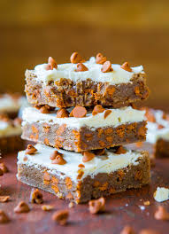

White Chocolate Cinnamon Chip Bars
Source:Habiba Kanwal

Ingridients
- Butter ½ cup (unsalted, melted)
- Egg 1 large
- Light brown sugar 1 cup (packed)
- Vanilla essence 2 tsp
- Cinnamon 2 tsp
- All purpose flour 1 cup
- Cinnamon chips 1 ½ cups
- White chocolate 8 ounces (melted)
Buy These Ingridients Now
Cooking Instructions
- Preheat oven to 350 F.
- Line an 8-by-8-inch baking pan with aluminum foil, spray with cooking spray; set aside.
- Melt the butter in a microwave bowl about 1 minute on high power.
- Let wait to lower down the temperature then add egg, brown sugar, vanilla essence, cinnamon
and all purpose flour.
- Mix all nicely until well combined.
- Mix 1 ¼ cups cinnamon chips in batter.
- Pour batter in prepared baking pan. Level the top with a spatula.
- Bake for about 18 to 20 minutes, or until done.
- Insert a toothpick in the center if it should come out clean, it is done. Allow bars to
cool.
- For topping melt the white chocolate in a microwave save bowl.
- Pour melted chocolate over the bars in an even layer and level it.
- Sprinkle with ¼ cup cinnamon chips.
- Allow white chocolate to cool completely then slice and serve.